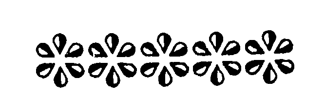

Tanto a madakel a manga katharo o Rasulollah (Sallallaho 'Alaihi Wasallam) a inipaliyogat iyan so Sambayang ago piyamagosay niyan so manga balas iyan a tanto a maregen oba ma-aloy langon sangka-iya maito a kitab. Ogaid na saba-ad baden a kha-aloy si-l ka antano makakowa sa Barakah:
1. "So Sambayang i mona-pona ago aya piyamoro-poroan a nganin a inipaliyogat o Allah, ago aya pagam-paganay ago piyamoro-poroan a phamagitongen ko Gawi-i a Kaphangokom."
2. "Kaleken ka so Allah si-i ko Sambayang! Kaleken ka so Allah si-i ko Sambayang! Kaleken ka so Allah si-i ko Sambayang!!!"
3. "So Sambayang na ayabo phageleta-an o tao ago so Shirk (Kapanakoto)."
4. "So Sambayang i tanda o Islam. So tao a ipephamayandeg iyan so Sambayang ko manga wakto niyan a Ikhlas ago phipiya-piya-an niyan, inggogolalan niyan so manga rokon taman ko "Mustahabbat", na mata-an a titho a Mo'min."
5. "Si-i ko langon o inipaliyogat o Allah, na so Iman ago so Sambayang i tanto ron a mala-i arga. Opama ka aden pen a makalawan ko Sambayang, na ipaliyogato Allah ko manga Mala-ikat Iyan, a so saba-ad kiran na romoroko na so manga ped na somodod sa dayon sa dayon."
6 "So Sambayang na polaos o Islam.”
7. “So Sambayang na mapephakadampanas iyan so Shaitan."
8. "So Sambayang na sindao o Mo'min."
9. "So Sambayang na maporo a Jihad."
10."So Allah na sisiyapen Niyan so tao ko tenday o gi-i niyan kazambayang."
11. "Igira minitalemba so tiyoba pho-on sa langit, na so manga tao a lalayon sa Masjid na phakalidas ko morala ago khatabiya on".
12. "Opama ka so manga ala a dosa o Muslim na ipakanaraka iyan, na so apoy na di niyan khatotong so anggaota si-i ko lawas iyan a minisekho iyan ko lopa ko masa a somosodod igira gi-i zambayang.
13. "So apoy na inisaparon so kasekho-a niyan ko manga anggaota o lawas a minitana ko lopa ko kasosodod iyan.”
14."Si-i ko langon a amai, na so Sambayang a inipamayandeg ko matetendo a wakto niyan i lebi a pekhababaya-an b Allah."
15. "So AIlah na tanto niyan a pekhababaya-an so mambebetad o tao igira a idedeket iyan so beneng iyan ko lopa ko masa a kasosodod iyan.”
16. "So tao a somosodod na lebi a marani ko Allah."
17. "So Sambayang na gonsi ko Sorga."
18 "Igira tomitindeg so tao ko Sambayang na so manga pinto o Sorga na langonon peleka-an ago so manga rending ko pageletan niyan ago so Allah na palayaden isayat (asar ka di niyan binasa-an so Sambayang iyan a kapelege-leget go so manga lagid iyan)."
19. "So tao a gi-i zambayang na (lagid o ba niyan) pethotoka so pinto-an o Datu a Kadnan iyan, ago so pinto na lalayon pheleka-an ko tao a pephanonotok."
20. "Aya darpa o Sambayang ko Islam na lagido darpa o olo si-i ko lawas."
21. "So Sambayang i sindao o poso. Sa khabaya na pakisindawi niyan so poso iyan (mokit ko Sambayang)."
22. "So tao a khabaya a karila-an o Allah so manga dosa niyan, na pagabdas phiya-piya, zambayang phiya-piya sa dowa odi na pat rak'at a paralo odi na Sunnat a Sambayang, na oriyan niyan na pamangeni ko Allah. So Allah na perila-an Niyan sekaniyan."
23. "Apiya anda ko lopa, a kiyatademanon so Allah ko Sambayang na pephangandag ko manga ped iyan ko lopa."
24. "So Allah na tharima-an Niyan so pangeni o tao a phamangeni ron ko oriyan o kapakazambayang iyan sa dowa rak'at a Sambayang. So Allah na imbegay Niyanon so pephangeni niyan, pekhasalak a sagogona odi na pekhata-alik (si-i matatago ko kakhapiya-iron ko tao)."
25. "So tao a mizambayang sa dowa rak'at ko kasisibay niyan, a daden a pephaka-ilay ron a rowar ko Allah ago so manga Mala-ikat Iyan, na phakakowa sa kapasadan a kaphakalidas iyan ko apoy ko Naraka."
26. "So katarima o isa a pangeni (singanin) a pho-on ko Allah na miyapatot ko tao ko oriyan o omani paralo a Sambayang a mininggolalan niyan."
27. "Miya haram ko apoy ko Naraka ago miyapatot so Sorga ko tao a magabdas phiya-piya ago inipamayandeg iyan so Sambayang phiya-piya, ko manga rokon niyan."
28."So Shaitan na ipekhalek iyan so Muslim ko tenday a kasisiyapa niyan ko Sambayang, ogaid na anda den i kindarainonen niyan non na miyasikhem sekaniyan o Shaitan na taros a pephanamaran niyan a kada-aga niyan non ko kapembodiyoka niyan non."
29. "So Sambayang si-i ko paganay a wakto niyan na aya taralebi a ola-ola."
30. "So Sambayang na aya pamemegayan o barasimba."
31. "So Sambayang ko paganay a wakto niyan na aya ola-ola a tanto a pekhababaya-an o Allah."
32."Oman Sobo, na aden a manga tao a pezong sa Masjid go aden a manga tao a pezong sa padian. So manga tao a pezong sa Masjid na aya maawid ko pandi o Islam go so manga tao a pezong sa padian na aya maawid ko pandi o Shaitan."
33. "So pat rak'at a Sunnat ko ona-an o Dhohr na lagid sa balas o pat rak'at a Tahajjud."
34."So pat rak'at a Sunnat ko ona-an o Dhohr na ini-itong sa lagid (sa balas) o pat rak'at a Tahajjud."
35. "So limo o Allah na pethoron ko tao a tomitindeg ko Sambayang."
36. "So Sambayang ko tena-tenao a gagawi-i na aya tanto a mala-i balas, ogaid na kainotan a giron nggola-ola."
37. "So Jibrail (Alaihis Salaam) na somiyong raken na pitharo iyan, "Ya Muhammad (Sallallaho Alaihi Wasallam), apiya-i kalendo o omor ka na aden bo a gawi-i a phatay ka, go saden sa pekhababaya-an ka na khaganatan ka sekaniyan bo. Mata-an a khakowang ka so balas o (mapiya odi na marata a) pinggola-olang ka. Mata-an a aya daradat o Mo'min na zisi-i ko Tahajjud ago aya menang iyan na zisi-i ko kasoso-at ago kasanggila."
38. "So dowa rak'at ko kinibolog o gawi-i na mala-i arga a di so langon o pathamotamokan ko donya. O di so kalek aken o ba karegeni so manga Ummat aken, na baloin ko kiran a paliyogat."
39 "Lalayon ka pethindegen so Tahajjud, sabap sa giyanan i lalan o manga tao a barasimba ago aya manga okit a iphakarani ko Allah. So Tahajjud na pekha-awat iyan so tao ko kandosa, ago pekhasabapan sa kakharila-i ko manga dosa ago ipethagompiya ko kambobolawasan."
40. "Pitharo o Allah, ‘Hay, mbawata-an o Adam! Dika pepharempes ko kipethindegen ka ko pat rak'at ko paganay ko daon-dao, ka angkosan Ko reka so manga galebek ka ko lamba ko kadaon-dao'."
So manga kitab a Hadith na mapepeno a osayan ko manga kalbihan o Sambayang, go inipaliyogat so kinggolalanen non o manga Muslim. Giyangakanan a pat-polo a Hadith a miya-aloy na khapakay a milangag ka aden makowa so balas o kilangagen ko Hadith. So kamamata-ani ron na so Sambayang na mata-an a mala a ontong, ogaid na ayabo a pephakatokao ron na so tao a kiyata-aman niyan so kamis iyan. Giyoto i sabap a so Rasulollah (Sallallaho 'Alaihi Wasallam) na pitharo iyan a so Sambayang na aya ikapiya o pangilay-layan niyan na go aya ola-ola niyan na so kala-an ko manga kagagawi-i niyan na initindeg iyan (so Sambayang) sa hadapan o Allah. Giya-i den i sabap a so Rasulollah (Sallallaho ’Alaihi Wasallam) si-i pen ko iga-an a phatayan niyan na inipi-is ago ini-paliyogat iyan reketano so kitomanen tano ko Sambayang. Miyapanothol ko madakel a Hadith a so Rasulollah (Sallallaho ’Alaihi Wasallam) na lalayon so gi-l niyan katharo a, "Kaleken niyo so Allah pantag ko Sambayang." So Abdullah bin Mas-od (Radhiallaho 'Anho) na miyapanothol iyan a miyaneg iyan so Rasulollah (Sallallaho 'Alaihi Wasallam) a gi-i niyan tharo-on, "Si-i ko langon o manga 'amal, na so Sambayang i tanto raken a mala-i arga.”
So isa ko manga Sahabah na piyanothol iyan, "Miyaka isa a gagawi-i na miyasalak a miyakasong ako sa Masjid. Miyaoma ko ro-o so Rasulollah (Sallallaho 'Alaihi Wasallam) a gi-i zambayang Miyapikir aken a monot ako ron Mini-at ako phiyapiya na tominindeg ako ko talikhodan niyan, sangkoto a masa na aya pembatiya-an niyan na so Sooratol Baqarah. Aya katao aken non na pageposen niyan so qirat (batiya) iyan na meroko ko oriyan o magatos a ayaat, ogaid na da bo roko Oriyan niyan na aya peman a miyapikir aken na masiken romoko ko ika dowa gatos a ayaat, ogaid na daon pen roko Aya miyapikir aken na pagepos niyan so Qiyam (tindeg) iyan ko oriyan o kabatiya-a niyan sangko a Soorah. So kiyaposa niyan ko Soorah na pitharo iyan so Allahumma Lakal Hamd (Ya Allah, na rek Ka so Podi) sa miyaka pira na oriyan niyan na pipho-onan niyan peman so Al-lmran. So kiyaposa niyan peman sangkoto a Soorah na pitharo iyan peman so Allahumma Lakal Hamd sa miyaka telo ago piphoonan niyan peman so Al-Maidah. Aya bo a kiya roko iyan na kagiya mapasad iyan angkoto a Soorah. Si-i ko Roko ago Sajdah na pembatiya-an niyan so Tasbeeh go so manga ped a dowa-a a dako lakay maneg. Si-i ko ika dowa rak'at na na pipho-onan niyan peman so Al-An’am ko oriyan o Fatihah Da ko magaga o bako tarosen so kaphagonot aken non sa miyakam belag ako ron." Giyangkoto a biyatiya o Rasulollah (Sallallaho 'Alaihi Wasallam) si-i ko isa a rak'at na mararani a ika nem ba-ad ko Qur'an. Liyo si-i pen na sekaniyan a Rasulollah (Sallallaho 'Alaihi Wasallam) na aya kepembatiya iyan na malombat go tatarotop niyan so Tajweed; tanto tano a miphagarangan ay taman a kalendo o rak'at. Giya-i sabap a so manga a-i niyan na lalayon pembetowan. Ogaid na da a maregen ago di kasosorot a baniyan ka-alangi so tao a so poso iyan na kiyata-aman niyan so kamis o Sambayang.
So Abu Ishaq Subaihi na lomalangkap a Muhaddith. Aya kiyapatay niyan na sobra magatos ragon a omor iyan. Si-i ko kiyalokes iyan na oman niyan den gi-i mipagata-at, "Phamli-in! Giyangka-iya kiyada o bager ago so kalokes na miyapapas iyan raken so babaya ko kalendo o rak'at. Aya bo a pekhagaga ko imanto na so Baqarah ago so Al-lmran ko sambayang aken a dowa rak'at.” Giyangka-iya dowa a Soorah na mararani a ika walo ba-ad ko Qur’an.
So Muhammad bin Sammak, ka lomalangkap a Auliya, na inisorat iyan, "So siringan aken sa Koofah na aden a wata iyan a bagoa mama. Giyangkoto a bagoa mama na gi-i mamowasa ko mababasa alongan ago gi-i manambayang ago manasbih ko mababasa gawi-i. Giyangka-iya a kaperomasai na tanto a mithanda ko lawas iyan taman sa tolan bo a miyalamba on (a kasasapengan o kobal). Piyangeni raken o ama iyan a saparan aken sekaniyan. Miyaka isa na mo-ontod ako ko paitao o walay aken na somiyagad raken so bagoa mama. Siyalam ako niyan sa Assalamo 'Alaykom sa miyontod sekaniyan ko obay aken. Dapen a miyatharo aken na ayaden miyona tharo sa pitharo iyan, 'Hay Bapa! Masiken a zaparan akongka ka anaken kakeneti so pephanamaran aken. Pamakineg angka pasin angka iya tothol aken. Aden a da mapira katao a manga ginawa-i aken sangka-iya inged. Miyapasad kami sa phelalawana kami ko simba ago so-a-so-at ko Allah. Langon siran miromasay zaben-sabenar taman sa piyakisogo-an siran o Allah. Inalaw iran so kapatay sa kababaya ago kalilintad. Imanto na saken bo i lamba. Antona-a i khapikir iran o pho-on ako mibagak? Hay Bapa! so manga ginawa-i aken na tanto siran a miromasay taman sa miyakowa iran so antap iran.' Oriyan niyan na piyanothol iyan raken so miyangapapasad o manga ginawai niyan, a tanto a iphamemesa o langon o phakanegon. Oriyan niyan na inawa-an ako niyan, na miyaneg aken si-i ko miyaka pira gawi-i a miyawapat sekaniyan mambo (Ikalimo sekaniyan o Allah)."
Apiya imanto a masa na aden a manga tao a tatap so katetembang iran ko Sambayang ko kalaan ko gagawi-i ago so kala-an ko kadaon-dao na aya pinggalebek iran na so Tabligh, go so Ta'lim go so manga ped a simba si-i sa lalan ko Allah. So Maulana Abdul Wahid Lahori (Rahmatollahi 'Alaihi) na lomalangkap a Auliya aya kiyapagintao niyan na manga dowa gatos ragon imanto. Miyakaginawa sekaniyan sa mala ago miyaka gora-ok ko kiyatokawi niyan sa daa sambayang ko Sorga - a darpa a kambalasa kena ba kapelogat. Pitharo iyan, "Anda manaya-i kaphaka piya ginawa ko ko Sorga o daon so Sambayang!" Giyanan so manga tao a aya ikapiya o Donya (so katatago iran non). Phamangenin tano ko Allah a ibegay Niyan reketano so bager o Imaan ago so babaya ko simba Rekaniyan' A'amin.
Si-i ko ona-an pen o dako kaposa sangka-iya pinto na aloyin tano si-i angka-iya mapiya a Hadith a miyaka poon ko Munabbihaat pho-on ko Ibn Hajr, "Miyaka isa na si-i ko kao-ontod o Rasulollah (Sallallaho 'Alaihi Wasallam) ago so manga Sahabah niyan, na pitharo iyan, 'Telo sangka-iya donya a pekhababaya-an ko so ikhakamotan, so manga babay ago so Sambayang a ikapiya o pangilay-layan aken.' 'Benar ka!’, Pitharo o Abu Bakr (Radhiallaho 'Anho), 'Saken na telo mambo a pekhababaya-an aken: so kaphagilaya ko ko paras ka, so gi-i aken kanggastowa ko tamok aken para reka ago so kababaloy o wata aken a karomang ka. "Benar Ka!,’ Pitharo o Omar (Radhiallaho 'Anho), 'Saken na telo mambo a pekhababaya-an aken so kipephami-is naken ko benar, so kipezapar naken ko marata ago so kanditar sa redak.' 'Benar ka!', Pitharo o Uthman (Radhiallaho 'Anho), 'Saken na telo mambo a pekhababaya-an aken so kapaka-kana ko pekhaor, so kapakanditara ko talandiang ago so kabatiya sa Qur’an.' "Benar ka!', Pitharo o Ali (Radhiallaho 'Anho), 'Saken na telo mambo a pekhababaya-an aken: so kapagana sa banto, so kaphowasa ko gawi-i a tanto a mitataralo so kayao niyan ago so kapethidawa ko a pedang aken ko rido-ai (o Islam).' Sangkoto a masa na miyaka talingoma so Jibrael (’Alaihis Salam) na pitharo iyan ko Rasulollah (Sallallaho ‘Alaihi Wasallam), 'So Allah na siyogo ako Niyan rekano ka petharo-on ko rekano so nganin a pekhababaya-an aken opama ka saken na isa ko ko manga manosia. "Oway, tharo angka rekami, Hay Jibrail!' Pitharo o Rasulollah (Sallallaho 'Alaihi Wasallam). Oriyan niyan na pitharo o Jibrael ('Alaihis Salam), "Opama ka saken na lagid iyo, na telo a pekhababaya-an naken So kanggonana-owa ko tao a madadadag, so kakhababaya-i aken ko manga tao a pekhasimba iran (so Allah) ko masa a kada-a rek ago so kaphagogopi aken ko manga tao a miskin. So peman so Allah, na telo a sipat o oripen Niyan a pekhababaya-an Niyan: So kaperomasay si-i ko lalan Niyan, so kagora-ok si-i ko kathaobat, ago so kathiger ko masa a kaor ago kamer-mer.'"
